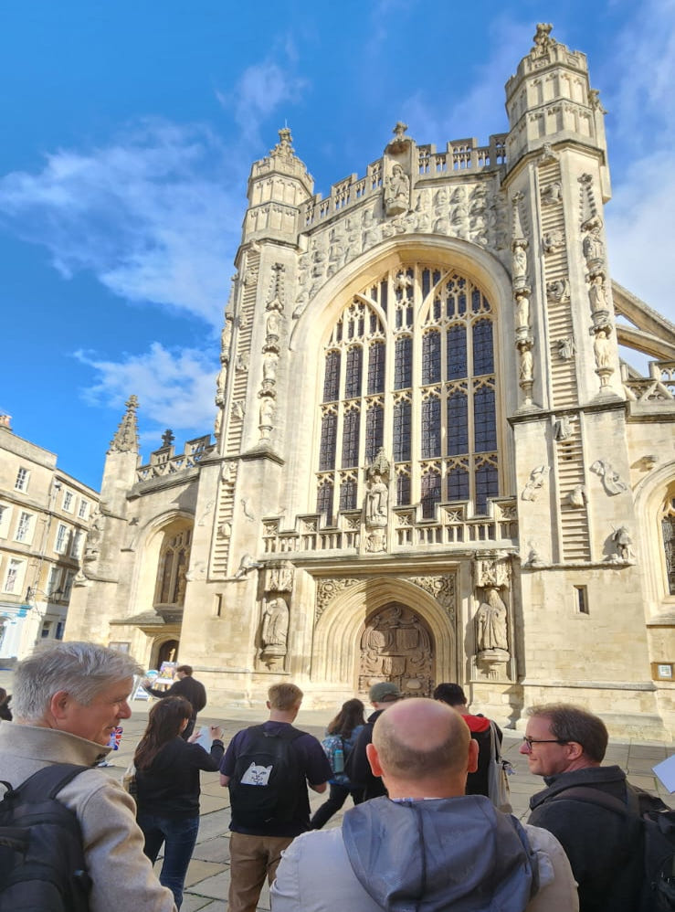

Conservation of Historic Buildings
We lead the MSc in Conservation of Historic Buildings, training future professionals in the repair, reuse, and sustainable management of historic structures.
We are a research and teaching cluster within the Department of Architecture & Civil Engineering at the University of Bath, advancing the conservation and regeneration of built heritage.
Active Research Projects
Cluster Members & Collaborators
Publications & Outputs
Years of Research Excellence
The Cluster fosters a collaborative environment that integrates research, teaching, and practice to safeguard and enhance the built environment. We emphasise interdisciplinary methods and the application of human-centric digital technologies in heritage management.
To become a leading centre for innovation in conservation engineering and management, promoting sustainable, inclusive, and regenerative approaches to heritage preservation worldwide.
We lead the MSc in Conservation of Historic Buildings, training future professionals in the repair, reuse, and sustainable management of historic structures.
Our research spans digital heritage, materials conservation, structural analysis, and regenerative design for climate resilience.
We work closely with heritage bodies, industry partners, and communities to advance best practices and promote sustainable cultural heritage conservation.
Our flagship postgraduate programme equips students with the technical knowledge and critical thinking needed to conserve and manage historic buildings in the 21st century. The course bridges engineering, history, and design — combining studio work, fieldwork, and a substantial research dissertation.

Investigating traditional materials — stone, timber, earthen construction, and historic mortars — to understand their long-term performance and guide sensitive repair strategies.
Developing human-centric digital twins, BIM workflows, and FAIR data frameworks to make heritage knowledge more accessible, reusable, and actionable for practitioners and communities.
Exploring low-carbon, circular, and regenerative approaches to the adaptation and reuse of historic buildings in the context of the climate emergency.
Examining governance frameworks, community engagement, and management strategies that enable the long-term stewardship of built heritage at local, national, and international scales.
Whether you are a prospective student, a heritage professional, or a researcher interested in collaboration, we would love to hear from you.